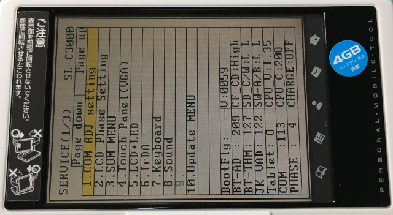
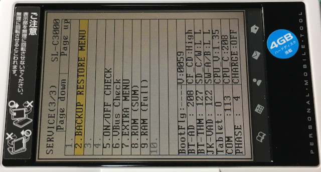
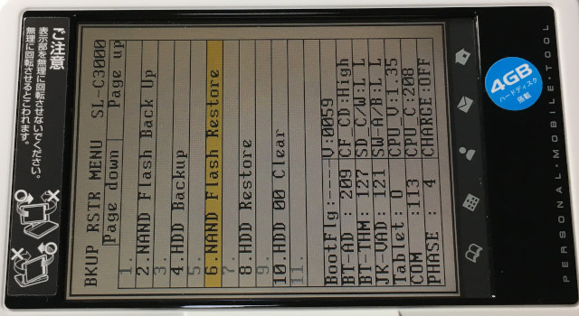
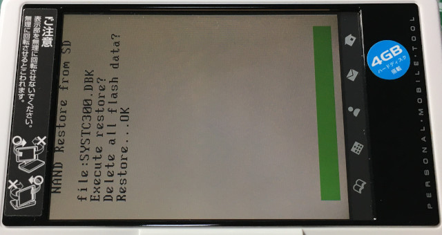
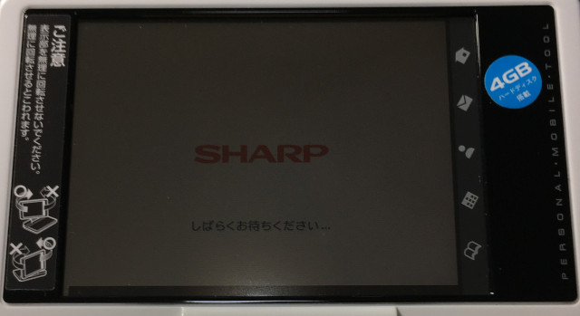
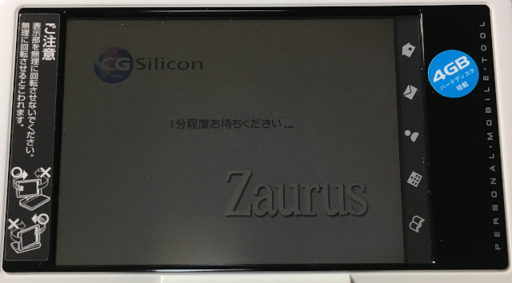
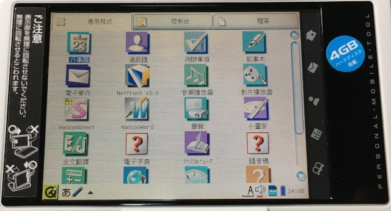

Steward
分享是一種喜悅、更是一種幸福
微電腦 - SHARP Zaurus SL-C3000 - Recovery
參考資訊：
http://www.trisoft.de/download/
步驟如下：
1. 下載https://github.com/steward-fu/website/releases/download/zaurus/recovery_c3000.zip
2. 解開取得systc300.dbk
3. 格式化SDCard(1GB)成FAT16檔案系統且不要有磁碟標籤
4. 將systc300.dbk檔案複製到SDCard根目錄
5. 將機器的電池以及電源拔掉
6. 將SDCard插入機器
7. 將機器背面的電池開關切到使用時
8. 按住機器的Fn + D + M並且不要放開
9. 將電池放入機器(此時還不可以放開Fn + D + M)
10. 等到開機出現如下畫面才可以將手放開

11. 選擇Service(3/3)的BACKUP RESTORE MENU然後按下OK

12. 選擇BACKUP RESTORE MENU的NAND Flash Restore然後按下OK

13. 跳出Execute restore?時，按下OK
14. 跳出Delete all flash data?時，按下OK進行回復的動作



